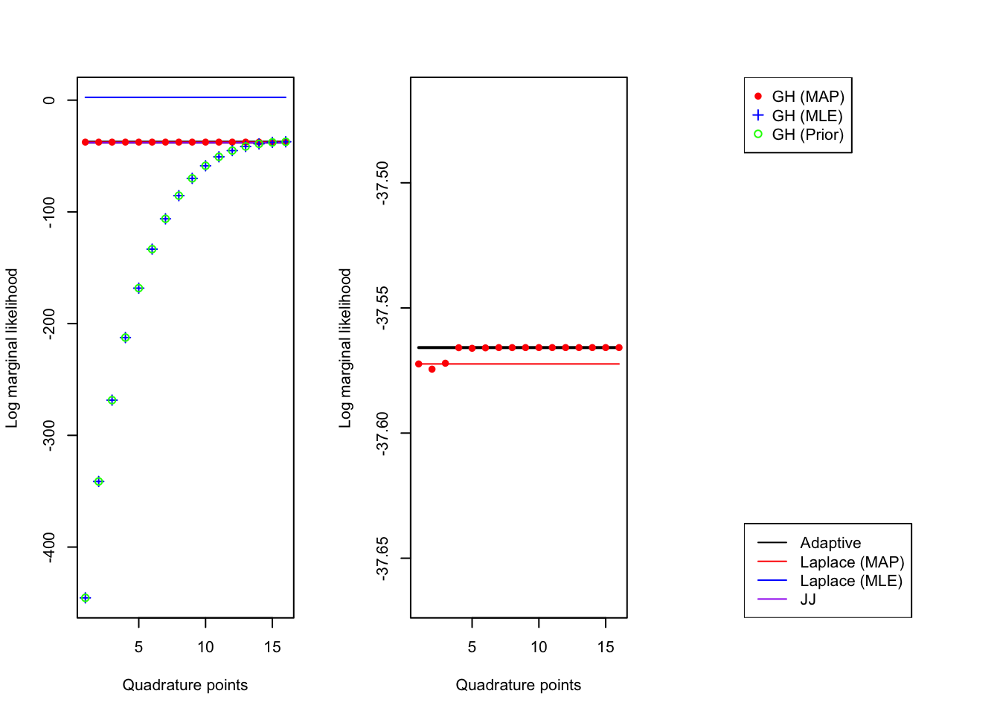
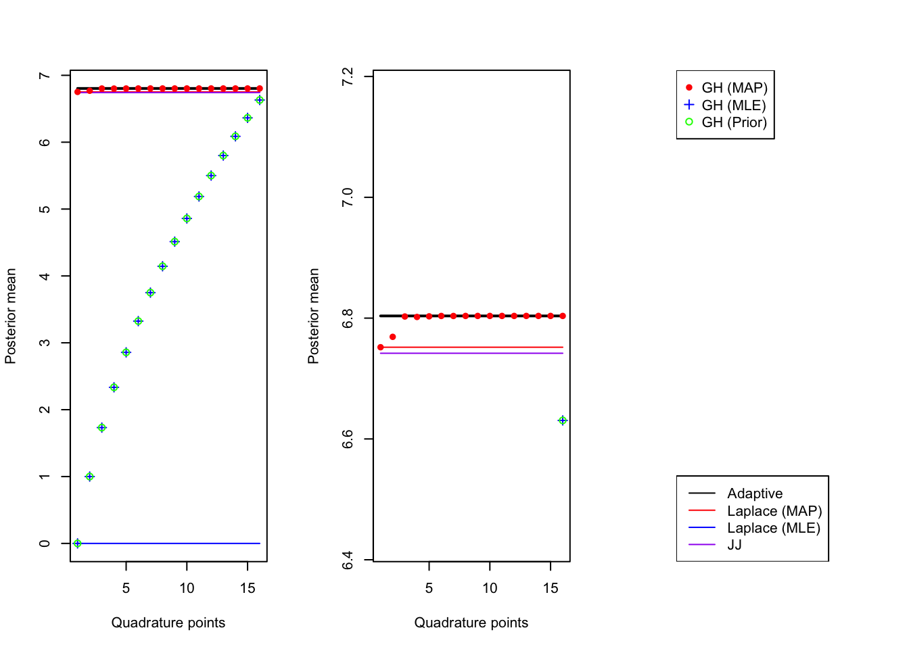

##### Minimal working example
f <- paste0('', Sys.glob('cache/resources/C1*')) # clear cash so it can knit
if(file.exists(f)){file.remove(f)}
make_c1_sim <- function(){
##### Minimal working example
c1 <- gseasusie::load_msigdb_geneset_x('C1')
# sample random 5k background genes
set.seed(0)
background <- sample(rownames(c1$X), 5000)
# sample GSs to enrich, picked b0 so list is ~ 500 genes
enriched_gs <- sample(colnames(c1$X), 3)
b0 <- -2.2
b <- 3 *abs(rnorm(length(enriched_gs)))
logit <- b0 + (c1$X[background, enriched_gs] %*% b)[,1]
y1 <- rbinom(length(logit), 1, 1/(1 + exp(-logit)))
list1 <- background[y1==1]
X <- c1$X[background,]
X <- X[, Matrix::colSums(X) > 1]
idx <- which(colnames(X) %in% enriched_gs)
list(X = X, y = y1, o = rep(0, length(y1)), idx = idx, b = b, b0 = b0, logits=logit)
}TODO:
- show that adaptive scheme is robust to the scaling factor we choose– we just need to be in a few orders of magnitude of \(\max \log p(y | x, b)\) for adaptive quadrature to work. I.e. we could integrate the likelihood ratio w.r.t the null model and be fine, rather than to the MAP soltn.
- quantify how many evaluations of the likelihood each method takes. MAP, MLE, and MLE-MAP are all basically the same. But it would be good to know how many evaluations adaptive takes, and if the 4 or 5 nodes required for Gauss-Hermite represents a large increase in computational cost.
- write discussion of the different simulation scenarios– basically Laplace at the MAP is working well across the tested scenarios, and we get results that agree with adaptive quadrature with just 4 or 5 nodes. The tightness of JJ depends on the simulation scenario.
- compare the posterior mean and posterior variance estimates for each of the methods also. This is important for GIBSS!
- integrate stuff under old into the document, and put the 2d quadrature stuff into a separate document so that this is just about a fixed intercept.
Setup
Here we consider logistic regression with a single covariate and fixed intercept. \(\tau\) is a fixed prior precision.
\[\begin{align} y_i | x_i, b_0 \sim \text{Bernoulli}(\sigma(b_0 + bx_9)) \\ b \sim N(0, \tau^{-1}) \end{align}\]
Where \(\sigma(x) = (1 + \exp(-x))^{-1}\) is the sigmoid funciton. Our goal is to compute the marginal likelihood, the posterior mean, and the posterior variance (actually we don’t need the variance…)
\[\begin{align} p(y | X) &= \int \prod p(y_i | x_i, b) p(b) db \\ \mu_{\text{post}} &= \int b \; p(b | y, X) \\ \sigma^2_{\text{post}} &= \int b^2 p(b | y, X) - \mu_{\text{post}}^2 \end{align}\]
The integrals cannot be computed in closed form, so we rely on numerical integration or approximation.
Adaptive quadrature
We can use an adaptive quadrature scheme to compute the marginal likelihood, posterior mean, and posterior variance for our problem.
The unnormalized likelihoods can be exceedingly small, especially for large data samples. In order to make the likelihood \(h(x) = f(x)/\max_x(f(x))\) \(\int f(x)dx = \max_x(f(x)) \int h(x)dx\). Applying our quadrature rule to the integral on the right avoids underflow issues.
In order to perform the 1d quadrature we need two things: (1) the fixed intercept and (2) a number of order \(\max_x(f(x))\) to normalize by. Both of these are provided by the MAP estimate.
Note: if we were to pursue a 2d quadrature where we integrate over the intercept rather than fixing it, we might get away with normalizing by the likelihood at \(\beta=0\). The null model is easy to fit, (and when we turn our attention to fitting the SER we will see that this computation can be done once per SER)
At the end of the day we want to avoid using the adaptive quadrature scheme. It can involve many evaluations of the likelihood which is expensive. The goal of this document is to find a fast, cheap, stable method for approximating this more precise, but computationally demanding approach.
Laplace Approximation
Standard Laplace approximation
The Laplace approximation takes a quadratic approximation of the log-integrand. So to approximation \(\int \exp f(x) dx\) we would consider the quadratic approximation \(\hat f(x; x_0) = f(x_0) + \nabla f(x_0) (x - x_0) + \frac{1}{2}(x - x_0)^T \nabla^2f(x_0) (x - x_0)\). We will write \(\hat f(x) = \hat f(x; x^*)\) where \(x*\) is the mode of \(f\). In this case \(\nabla f(x^*) =0\) and the first order term is eliminated. Write \(\Lambda = -\nabla^2f(x^*)\) the approximation can be identified as a Gaussian integral
\[ \begin{align} \int \exp f(x) \approx \int \exp \hat f(x) dx = \exp f(x^*) (2\pi)^{p/2}|\Lambda|^{-\frac{1}{2}} \end{align} \]
In the univariate case this simplifies to \[ \begin{align} \int \exp f(x) \approx \int \exp \hat f(x) dx = \exp f(x^*) \sqrt{\frac{2\pi}{\lambda}} \end{align} \] where \(\lambda = -\frac{d^2}{dx^2}f(x)\vert_{x= x^*}\)
To make this explicit for our case, we make
\[\begin{align} f(b) &= \log p(y | b) + \log p(b) \\ &= \sum y_i (x_i b) - \log (1 + \exp(x_i b)) - \frac{\tau}{2} b^2 + 0.5 \times \log(\frac{\tau}{2 \pi}) \end{align}\]
We compute the MAP \(b^* = \arg\max_b f(b)\) and then \(\frac{d^2}{db^2} f(b) = \sum_i \sigma(x_ib)\sigma(-x_i b) x_i^2\) to yield the Laplace approximation.
Other expansion points
We discuss other Laplace type approximations. The general idea is to decompose \(f(x) = g(x) + Q(x)\) where \(Q\) is quadratic, then rather than making a Taylor approximation to \(f\) directly, we can make a Taylor approximation of \(g\), and combine it with \(Q\). In our case we might pick \(g(b) = \log p(y | X, b)\) and \(Q(b) = \log \phi(b; 0, \tau^{-1})\). In this case we would expand \(g\) around the MLE \(\hat b\):
\[\begin{align} \int \exp f(b) db &= \int \exp (g(b) + Q(b)) db \\ &\approx \int \exp \hat g(b) \phi(b; 0, \tau^{-1})) db \\ &= \exp g(\hat b) (\frac{2\pi}{\nu})^{\frac{1}{2}} \int \phi(\hat b; b, \nu^{-1}) \phi(b; 0, \tau^{-1})db\\ &= \exp g(\hat b) (\frac{2\pi}{\nu})^{\frac{1}{2}} \phi(\hat b; 0, \nu^{-1} + \tau^{-1}) \end{align}\]
Where we recognize that the convolution of Gaussians is Gaussian with the sum of the variances.
This approximation comes with a natural estimate of the posterior mean and variance, \(\mu = \frac{\nu}{\nu + \tau} \hat \beta\) and \(\sigma^2 = (\nu + \tau)^{-1}\).
We might also consider the choice
\[\begin{align} g(b) = \log p(y | X, b) - \log \phi(b; 0, \tau_2^{-1}), \\ Q(b) = \log \phi(b; 0, \tau^{-1}) + \log \phi(b; 0, \tau_2^{-1}). \end{align}\]
For \(\tau_2\) small, this might be a good alternative to expanding around the MLE, as we can be assured that the MAP always exists. However, this is probably not a good choice for \(\tau_2 >> \tau\).
Why expand at a point other than the mode
This approach is less relevant when we consider a fixed prior, because it is not harder to compute the MAP than it is to compute the MLE. However, it is of interest how accurate these approximations are across a range of prior variances. If the approximation is good, it provides an inexpensive way of tuning the prior variance– the approximate likelihood can be computed with a single evaluation of the Gaussian density function, rather than re-optimizing for each value of \(\tau^{-1}\). Note: even if we can use this approach to select \(\tau\), it is probably wise to compute a more accurate approximation of the marginal likelihood, posterior mean, and posterior variance once \(\tau\) is fixed.
Gauss-Hermite quadrature
Gauss-Hermite quadrature is a useful technique for numerical computations of integrals of the form
\[\begin{align} \int f(x) \exp(-\frac{1}{2} x^2) = \sqrt{2 \pi} \mathbb E_{N(0, 1)}[f(X)] \end{align}\]
The quadrature rule is given by:
\[\begin{align} \int f(x) \exp(-\frac{1}{2} x^2) = \sum_i^m f(x_i) w_i \end{align}\]
Where \((x_i)_{i=1}^m\) are the roots of the \(m\)-th Hermite polynomial. The corresponding weights \(w\) can be naively determined by solving a system of equations \(Aw = b\) where \(A\) is a matrix giving the evaluation of \(m\) functions \((f_i)_{i=1}^m\) at \((x_i)_{i=1}^m\) and \(b\) are there integrals \(F_i = \int f_i(x) e^{-x^2}\) (there are more efficient ways to compute the weights, the point is that quadrature rules are essentially determined by their choice of evaluation points and weight function). The \(f_i\) must be polynomials of degree \(2m+1\), and the \(m\) point quadrature rule is exact for all polynomials degree \(\leq 2m+1\), (why \(2m+1\)? consider that \(f_i = \sum_{i=0}^{2m} a_ix^i\) the even terms get killed in the integral).
Change of variable
A simple change of variable let’s us use Gauss-Hermite quadrature to approximate expectations with respect to \(N(\mu, \sigma^2)\)
Relationship to the Laplace approximation
If we take \(\mu = b^*\) and \(\sigma = \sqrt{\frac{1}{\lambda}}\) the \(1\)-point Gauss-Hermite quadrature is equivalent to the Laplace approximation.
Discussion of efficiency
To compute the integral \(\int g(x) dx\) using Gauss-Hermite quadrature we will factor out a Gaussian density \(\int \frac{g(x)}{\phi(x; \mu, \sigma^2)} \phi(x; \mu, \sigma^2)\). We see that there is a choice in which Gaussian density to factor out. The \(m\) point quadrature rule is exact for \(h(x) = \frac{g(x)}{\phi(x; \mu, \sigma^2)}\) a polynomial of degree \(\leq 2m+1\). For our quadrature to be accurate we want \(h(x)\) to be well approximated by a low-degree polynomial. In particular, we care that the approximation is good in the regions of \(\mathbb R\) that contribute most to the integral.
Integrals of this form a common in statistical applications.
Polya-Gamma Augmentation/Jaakkola-Jordan
This is the standard variational approximation for logistic regression first introdced by Jaakola and Jordan. The develop a family of quadratic lower bounds to the binomial log likelihood (Jaakkola and Jordan, n.d.). This approximation has an interpretation as a mean-field variational approximation to the Polya-Gamma augmented model, where the parameter \(\xi\) that indexes the family of quadratic bounds corresponds to the variational approximation for the latent variable.
Using the variational approximation is appealing because it presents few issues when it comes to dealing with a prior on the variance. The evidence lower bound gives a lower bound on the marginal log likelihood. While variational approximations are known to underestimate the posterior variance, we do not need the posterior variance for variable selection using GIBSS.
Implemented in logisticsusie::fit_univariate_vb
Code
Simulation functions
This creates the SER simulation that we’ve been working with. We simulate 3 enriched gene sets from mSigDB C1 on a background of 5000 genes. When the number of genes is small like this it is not uncommon to have completely enriched gene sets (that is, where \(\{i: x_i = 1\} \subseteq \{i: y_i = 1\}\).
We look at a few other edgecases: complete enrichment, complete separation (for both binary and continuous \(x\)), and regular simulations (for both binary and continuous \(x\)).
# "completely enriched"
sim1 <- function(n=500){
set.seed(1)
x <- rbinom(n, 1, 0.2)
y <- rbinom(n, 1, 0.7)
y[x == 1] = 1
ll0 <- sum(dbinom(y, 1, mean(y), log=T))
return(list(x=x, y=y, ll0 = ll0, o = rep(0, length(y))))
}
# "completely separated, binary x"
sim2 <- function(n=500){
set.seed(2)
x <- rbinom(n, 1, 0.2)
y <- x
ll0 <- sum(dbinom(y, 1, mean(y), log=T))
return(list(x=x, y=y, ll0 = ll0, o = rep(0, length(y))))
}
# "completely separated, continuous x"
sim3 <- function(n=500){
set.seed(3)
x <- rnorm(n)
y <- as.integer(x > 1.5)
ll0 <- sum(dbinom(y, 1, mean(y), log=T))
return(list(x=x, y=y, ll0 = ll0, o = rep(0, length(y))))
}
# "regular simulation, binary x"
sim4 <- function(n=500){
set.seed(4)
x <- rbinom(n, 1, 0.2)
logit <- -1 + x
prob <- 1/(1 + exp(-logit))
y <- rbinom(n, 1, prob)
ll0 <- sum(dbinom(y, 1, mean(y), log=T))
return(list(x=x, y=y, ll0 = ll0, o = rep(0, length(y))))
}
# "regular simulation, continuous x"
sim5 <- function(n=500){
set.seed(4)
x <- rnorm(n)
logit <- -1 + x
prob <- 1/(1 + exp(-logit))
y <- rbinom(n, 1, prob)
ll0 <- sum(dbinom(y, 1, mean(y), log=T))
return(list(x=x, y=y, ll0 = ll0, o = rep(0, length(y))))
}
# "c1-GS66 example
sim6 <- function(n=500){
sim <- make_c1_sim()
x <- sim$X[,66]
y <- sim$y
ll0 <- sum(dbinom(y, 1, mean(y), log=T))
return(list(x=x, y=y, ll0 = ll0, o = rep(0, length(y))))
}Helper functions
logsumexp <- function(x){
C <- max(x)
return(C + log(sum(exp(x - C))))
}
Diff <- function(f, g){Vectorize(function(b){f(b) - g(b)})}
Sum <- function(f, g){Vectorize(function(b){f(b) + g(b)})}
Exp <- logisticsusie:::Exp
Shift <- logisticsusie:::Shift
Prod <- function(f, g){Vectorize(function(b) f(b) * g(b))}Adaptive quadrature
#' note argument alpha, lets us scale the scaling factor-- make sure rults are not too dependent on logp at the MAP...
adaptive <- function (x, y, o = NULL, prior_variance = 1, eps = 0, width = Inf, alpha=1) {
ridgefit <- logisticsusie:::ridge(x, y, o, prior_variance)
f <- logisticsusie:::make_log_joint_ridge(x, y, o, ridgefit)
range <- with(ridgefit, {
s <- 1/sqrt(tau0)
c(eps + mu - width * s, eps + mu + width * s)
})
lower <- range[1]
upper <- range[2]
if (lower > ridgefit$mu | upper < ridgefit$mu) {
warning("MAP is not in the integration interval")
}
C <- f(ridgefit$mu) + log(alpha)
f2 <- Exp(Shift(f, C))
logZ <- log(integrate(f2, lower, upper)$value) + C
D <- exp(C - logZ)
mu <- integrate(function(b) {
b * f2(b)
}, lower, upper)$value * D
mu2 <- integrate(function(b) {
b^2 * f2(b)
}, lower, upper)$value * D
var <- mu2 - mu^2
return(list(mu = mu, var = var, intercept = ridgefit$intercept,
logZ = logZ))
}Expand around MLE
Here we implement the MLE-based Laplace approximation. We also implement a function that “unshrinks” the MAP estimates at one setting of the prior variance to estimate the mean and variance of the MLE. This is useful because we can then take this approximate MLE and use Laplace-MLE to approximate the posterior summaries under a different setting of the prior variance.
# compute log laplace bf expanded around the MLE
compute_laplace_lbf_mle <- function(betahat, shat2, lr, prior_variance){
tau1 <- 1/shat2
tau0 <- 1/prior_variance
tau <- tau1 + tau0
#lbf <- lr + 0.5 * log(tau1/tau) - 0.5 * tau1 * tau0 / tau * betahat^2
lbf <- lr + 0.5 * log(2 * pi/ tau1) + dnorm(betahat, mean=0, sd = sqrt(shat2 + prior_variance))
return(lbf)
}
#' Approximate log bf and posterior with normal approximation expanding about MLE
laplace_mle <- function(mle, prior_variance=1){
mle$lbf <- with(mle, compute_laplace_lbf_mle(betahat, shat2, lr, prior_variance))
# add approximate posterior to mle
tau1 <- 1/mle$shat2
tau0 <- 1/prior_variance
mle$mu <- tau1/(tau0 + tau1) * mle$betahat
mle$tau <- tau1 + tau0
mle$prior_variance <- prior_variance
mle$logZ <- mle$lbf + mle$ll0
return(mle)
}
#' 'unshrink' a l2 regularized fit
unshrink <- function(fit){
nu <- fit$tau
tau0 <- fit$tau0
tau <- nu - tau0
betahat <-nu/tau * fit$mu
shat2 <- 1/tau
# approximates the log liklihood under the mle
#ll <- fit$ll - 0.5 * log(tau0 / (2 * pi)) + 0.5 * nu*tau0/(nu - tau0) * fit$mu^2
# this it the value of log likelihood that recovers the laplace MAP logZ
# should agree with formula above but maybe there seemes to be a subtle bug
tau1 <- 1/shat2
tau <- tau1 + tau0
ll <- fit$logZ - 0.5 * log(tau1/tau) + 0.5 * tau1 * tau0 / tau * betahat^2
ll0 <- fit$ll0
lr <- ll - ll0
return(list(betahat = betahat, shat2 = shat2, intercept=fit$intercept, ll0 = ll0, ll = ll, lr = lr))
}
#' 'unshrink' and 'reshrink'
laplace_map <- function(fit, prior_variance=1){
unsrhunk <- unshrink(fit)
return(laplace_mle(unsrhunk, prior_variance))
}Gauss-Hermite code
Here we implement Gauss-Hermite quadrature for the logistic regression problem. We allow flexibility in specifying \(q\). Our goal generally is to find a robust way to pick \(q\) that yields a strong approximation to the marginal likelihood with only a few quadrature points.
#' gauss-hermite quadrature for \int f(b) db
#' centered on mu, with precision tau
gauss_hermite <- function(f, mu, tau, ll0, m=9){
# make quadrature points
quad_points <- statmod::gauss.quad.prob(
m, dist='normal', mu=mu, sigma=sqrt(1/tau))
# function logq(b)
logq <- function(b){
dnorm(b, mean=mu, sd=sqrt(1/tau), log=T)
}
# compute marginal log likelihood
h <- Diff(f, logq)
# compute log \int f(b)/q(b) q(b) db
logZ <- logsumexp(h(quad_points$nodes) + log(quad_points$weights))
lbf <- logZ - ll0
# compute posterior mean
h1 <- Prod(identity, Exp(Shift(h, logZ)))
mu <- sum(h1(quad_points$nodes) * quad_points$weights)
# h2 <- Prod(function(x){x^2}, Exp(Shift(h, logZ)))
# mu2 <- sum(h2(quad_points$nodes) * quad_points$weights)
h2 <- Sum(function(x){2 * abs(x)}, Shift(h, logZ))
logmu2 <- logsumexp(h2(quad_points$nodes) + log(quad_points$weights))
mu2 <- exp(logmu2)
var <- mu2 - mu^2
list(lbf = lbf, logZ = logZ, mu=mu, var=var)
}
make_log_joint <- function (x, y, o, beta0, sigma2) {
ll_base <- function(beta) {
psi <- beta0 + x * beta + o
ll <- sum(psi * y - log(1 + exp(psi))) + dnorm(beta,
sd = sqrt(sigma2), log = T)
return(ll)
}
log_joint <- Vectorize(ll_base)
return(log_joint)
}
#' fit has intercept, prior_variance, mu, tau, ll0
gauss_hermite2 <- function(x, y, o, ll0, fit, m=9){
f <- with(fit, make_log_joint(x, y, o, intercept, prior_variance))
return(gauss_hermite(f, fit$mu, fit$tau, ll0, m = m))
}Code for experiments
mle_fixed_intercept <- function (x, y, o, b0, ll0, family = "binomial") {
fit <- glm(y ~ x + 0, offset = (o+b0), family=family)
#fastglm::fastglm(y = y, x = as.matrix(x, ncol=1), offset = o + b0, family = family)
coef <- unname(fit$coefficients)
intercept <- b0
betahat <- coef[1]
shat2 <- summary(fit)$coef[1, 2]^2
ll <- -0.5 * fit$deviance
lr <- ll - ll0
res <- list(betahat = betahat, shat2 = shat2, intercept = intercept,
lr = lr, ll0 = ll0, ll = ll)
return(res)
}
driver <- function(sim, prior_variance, max_m=32){
o <- rep(0, length(sim$y))
adaptive <- with(sim, logisticsusie::logistic_bayes(x, y, o, prior_variance))
mle <- with(sim, laplace_mle(
mle_fixed_intercept(x, y, o, adaptive$intercept, ll0), prior_variance=prior_variance))
map <- with(sim, logisticsusie:::ridge(x, y, o, prior_variance=prior_variance))
jj <- with(sim, logisticsusie::fit_univariate_vb(x, y, o, tau0=1/prior_variance))
jj$logZ <- tail(jj$elbo, 1)
gh_map <- with(sim, purrr::map(1:max_m, ~gauss_hermite2(x, y, o, ll0, map, m=.x)))
gh_mle <- with(sim, purrr::map(1:max_m, ~gauss_hermite2(x, y, o, ll0, mle, m=.x)))
prior <- with(map, list(intercept=intercept, ll0=ll0, mu=0, prior_variance=prior_variance, tau0 = 1/prior_variance, tau=1/prior_variance))
gh_prior <- with(sim, purrr::map(1:max_m, ~gauss_hermite2(x, y, o, ll0, prior, m=.x)))
return(list(adaptive=adaptive, mle=mle, map=map, jj = jj, gh_map=gh_map, gh_mle=gh_mle, gh_prior=gh_prior, prior=prior))
}
make_plot<- function(fits, ylim=NULL, val='logZ'){
# unpack
gh_map <- fits$gh_map
gh_mle <- fits$gh_mle
gh_prior <- fits$gh_prior
adaptive <- fits$adaptive
mle <- fits$mle
map <- fits$map
jj <- fits$jj
if(val == 'logZ'){
gh_map_vals <- purrr::map_dbl(gh_map, ~.x$logZ)
gh_mle_vals <- purrr::map_dbl(gh_mle, ~.x$logZ)
gh_prior_vals <- purrr::map_dbl(gh_prior, ~.x$logZ)
adaptive_val <- adaptive$logZ
map_val <- map$logZ
mle_val <- mle$logZ
jj_val <- jj$logZ
}
max_m <- length(gh_map_vals)
if(is.null(ylim)){
ylim <- range(gh_map_vals, gh_mle_vals, gh_prior_vals, adaptive_val, mle_val)
}
plot(1:max_m, rep(adaptive_val, max_m), col='black', type='l', ylim=ylim, lwd=2,
xlab = 'Quadrature points', ylab='Posterior variance')
lines(1:max_m, rep(map_val, max_m), col='red')
lines(1:max_m, rep(mle_val, max_m), col='blue')
lines(1:max_m, rep(jj_val, max_m), col='purple')
points(1:max_m, gh_map_vals, col='red', pch=16)
points(1:max_m, gh_mle_vals, col='blue', pch=3)
points(1:max_m, gh_prior_vals, col='green', pch=1)
}
make_legend <- function(){
plot(NULL ,xaxt='n',yaxt='n',bty='n',ylab='',xlab='', xlim=0:1, ylim=0:1)
legend('topleft',
legend=c('GH (MAP)',
'GH (MLE)',
'GH (Prior)'),
col=c('red', 'blue', 'green'),
pch=c(16, 3, 1))
legend('bottomleft', legend=c('Adaptive', 'Laplace (MAP)', 'Laplace (MLE)', 'JJ'),
col=c('black', 'red', 'blue', 'purple'), lty=1:1)
}Experiments
Output: a plot that shows accuracy of a posterior summary for
- Adaptive quadrature
- Laplace approximation
- Gauss-Hermite quadrature (MAP) (at range of quadrature points)
- Gauss-Hermite quadrature (MLE) (at range of quadrature points)
- Gauss-Hermite quadrature (Prior) (at range of quadrature points)
- Gauss-Hermite quadrature (other expansion point) (at range of quadrature points)
We plot the number of quadrature points against the approximate the the log-marginal likelihood. For Laplace-MAP, Laplace-MLE, Jaakkola-Jordan, and adaptive quadrature we plot the log-marginal likelihood as a horizontal line.
The left panel shows the log-marginal likelihood on a scale where all results are visible, this gives us a birds eye view of the accuracy of our method and helps us characterize in what scenarios method(s) fail. On the write panel we zoom in to \(\log p(y | x) \pm 0.5\) to show accuracy on a finer scale.
Completely enriched
In the completely enriched case the MLE does not exist and we get degenerate estimates from software for computing the MLE. The exceedingly large standard error means that Laplace-MLE essentially gives the prior.
sim <- sim1()
fits <- driver(sim, 1., 16)
par(mfrow=c(1, 3))
make_plot(fits)
make_plot(fits, ylim=c(-0.5, 0.5) + fits$adaptive$logZ)
make_legend()
Seperable, binary covariate
sim <- sim2()
fits <- driver(sim, 1., 16)
par(mfrow=c(1, 3))
make_plot(fits)
make_plot(fits, ylim=c(-0.1, 0.1) + fits$adaptive$logZ)
make_legend()
Seperable, continuous covariate
sim <- sim3()
fits <- driver(sim, 1., 16)Warning: glm.fit: fitted probabilities numerically 0 or 1 occurredpar(mfrow=c(1, 3))
make_plot(fits)
make_plot(fits, ylim=c(-0.1, 0.1) + fits$adaptive$logZ)
make_legend()
Regular, binary covariate
sim <- sim4()
fits <- driver(sim, 1., 16)
par(mfrow=c(1, 3))
make_plot(fits)
make_plot(fits, ylim=c(-0.1, 0.1) + fits$adaptive$logZ)
make_legend()
Regular, continuous covariate
sim <- sim5()
fits <- driver(sim, 1., 16)
par(mfrow=c(1, 3))
make_plot(fits)
make_plot(fits, ylim=c(-0.1, 0.1) + fits$adaptive$logZ)
make_legend()
C1-GS66 example
sim <- sim6()loading gene set from msigdbr: C1Adding missing grouping variables: `geneSet`fits <- driver(sim, 1., 16)
par(mfrow=c(1, 3))
make_plot(fits)
make_plot(fits, ylim=c(-0.1, 0.1) + fits$adaptive$logZ)
make_legend()
OLD
Gauss-Hermite Quadrature
Gauss-Hermite quadrature is a natural choice for integrating over normal priors. We need to make a choice about where to “center” the prior
Gauss Hermite at the MAP
In this simulation the Laplace approximation is extremely accurate, and it only take 4 quadrature points to get a Gauss-Hermite quadrature rule that matches adaptive quadrature.
Gauss-Hermite, approximate MAP
MAP-MLE
Here we first compute the MLE, and then approximate the MAP by taking a quadratic approximation of the likelihood and combining it with the prior. This approximation also gives us an approximation of the log-marginal likelihood (green), however this approximation must be distinguished from the true MAP approximation (blue), as well as the approximation yielded by expanding at the approximate MAP computed (\(m=1\)).
We see that the MLE-based MAP approximation is not very good. But the situation quickly improves even for the one-point Gauss-Hermite quadrature. The one point quadrature and Laplace approximation correspond when the single evaluation point is the mode, and the Gauss-Hermite quadrature rule is appropriately transformed to reflect the curvature at this point (LIU and PIERCE 1994). However, this does not hold at the approximate MAP. First, the approximation of the likelihood at the approximate MAP is only an approximation. Second, the \(1\)-point Gauss-Hermite quadrature does not quite correspond to the expansion at the approximate MAP, as the first order term in the approximation is assumed to be zero. For that to be true we must either be at the mode (so the gradient is 0) or the mean (so the expected value of the first order term is 0)$.
MAP-MAP
Here we compute the MAP at some other value of the prior variance. We then “unshrink” the fit, and then “reshrink” it at the prior variance of interest.
fit10 <- logisticsusie:::ridge(x, y, o, prior_variance=10)
fit10_1 <- laplace_map(fit10, prior_variance=1)
fit10_1$logZ
gauss_hermite2(x, y, o, fit10_1, m=1)$logZ # should agree with laplace
gh <- purrr::map_dbl(1:32, ~gauss_hermite2(x, y, o, fit10_1, m=.x)$logZ)
par(mfrow=c(1, 2))
plot(1:32, gh[1:32], ylim=range(gh, fit10_1$logZ, fit1$logZ, quad$logZ));
abline(h = quad$logZ, col='red');
abline(h = fit1$logZ, col='blue');
abline(h = fit10_1$logZ, col='green');
plot(1:32, gh[1:32], ylim=range(gh, fit1$logZ, quad$logZ));
abline(h = quad$logZ, col='red');
abline(h = fit1$logZ, col='blue');The “unshrink” then “reshrink” procedure is probably better when we want to shrink more aggressively, but can be unreliable when we want to shrink less aggressively. In the extreme, we set the prior variance to a very small value. The MLE is way out in the tail of this Laplace approximation and our reconstruction can be very poor. Here we see even as we increase the number of quadrature points, the approximation fails to converge to the true value.
fit1em5 <- logisticsusie:::ridge(x, y, o, prior_variance=1e-10)
fit1em5_1 <- laplace_map(fit1em5, prior_variance=1)
fit1em5_1$logZ
gauss_hermite2(x, y, o, fit1em5_1, m=1)$logZ # should agree with laplace
gh <- purrr::map_dbl(1:32, ~gauss_hermite2(x, y, o, fit1em5_1, m=.x)$logZ)
par(mfrow=c(1, 2))
plot(1:32, gh[1:32], ylim=range(gh, fit1em5$logZ, fit1$logZ, quad$logZ));
abline(h = quad$logZ, col='red');
abline(h = fit1$logZ, col='blue');
abline(h = fit1em5$logZ, col='green');
plot(1:32, gh[1:32], ylim=range(gh, fit1$logZ, quad$logZ));
abline(h = quad$logZ, col='red');
abline(h = fit1$logZ, col='blue');Gauss-Hermite at the prior
Here we explore Gauss-Hermite quadrature over the prior \(q = N(0, \sigma^2_0)\). We see that (1) it takes a large number of quadrature points to get a good approximation of the log-marginal likelihood. and (2) the approximation error oscillates.
Note that we fix the intercept at the MAP estimate of the intercept, so that we can expect as the quadrature points increase, the marginal likelihood should converge to the same result as adaptive quadrature and Gauss-Hermite at the MAP.
null_intercept <- log(mean(y)/mean(1-y))
ll <- sum(dbinom(y, 1, 1/(1 + exp(-quad$intercept)), log=T))
null <- list(mu = 0, prior_variance=1, tau0 = 1, intercept = quad$intercept, ll=ll, ll0 = ll0)
gh_null <- purrr::map_dbl(1:128, ~gauss_hermite2(x, y, o, null, m=.x)$logZ)
par(mfrow=c(1, 3))
plot(1:128, gh_null[1:128]); abline(h = quad$logZ, col='red')
plot(10:128, gh_null[10:128]); abline(h = quad$logZ, col='red')
plot(100:128, gh_null[100:128]); abline(h = quad$logZ, col='red')Dealing with the intercept
Fixed intercept
In the above demonstration we have worked with a fixed intercept.
Notably, we still got very similar results for the MAP-MAP and MAP-MLE approaches, which used the intercept from the MAP under a different setting of the prior variance or the intercept from the MLE.
Profile likelihood
One option is a profile likelihood approach. The idea is that we replace the likelihood \(f(\beta,\beta_0)=\log p(y | \beta, \beta_0)\) with \(g(\beta) = \max_{\beta_0} f(\beta, \beta_0)\). For example, under the null model (\(\beta = 0\)) when there is no offset, we can easily compute the setting of the intercept that maximize \(\arg\max_{\beta_0}f(0, \beta_0) - \log \frac{\bar y}{1 - \bar y}\). I wonder if there is an analytic solution for the intercept when the offset/effects are non-zero. In this case we could cheaply update the intercept before marginalizing over \(\beta\).
Otherwise, it will take a few Newton steps (e.g. 5) to maximize the intercept, in which case we may be better off using those likelihood evaluations to integrate over the prior using a quadrature rule.
Integrating over the intercept
We consider integrating the intercept over a flat prior. For a given value of the effect, we would marginalize over the intercept with a Gauss-Hermite quadrature or a Laplace approximation. Here we provide code for computing the marginal likelihood where we integrate over the effect and intercept when there is a normal prior on the intercept. We set the prior variance to a large value, \(\sigma^2_{int} = 1000\), so that it is effectively a flat prior.
integrate_intercept <- function(x, y, o, prior_variance=1, m_int=5, m=5){
# 1. fit MAP
tau0 <- 1/prior_variance
ridgefit <- logisticsusie:::ridge(x, y, o, prior_variance=1/tau0)
# 2. make function that marginalized over the intercept (flat prior)
intercept_marginalized <- function(b){
# log p(y, b | b0)
f1 <- Vectorize(function(b0){
psi <- b0 + x * b
if (!is.null(o)) {
psi <- psi + o
}
return(sum((y * psi) - log(1 + exp(psi))) + dnorm(b, 0,
sd = sqrt(1/tau0), log = T) + dnorm(b0, 0, sd=10000, log=T))
})
# adaptive quadrature
if(m_int == -1){
# log p(y, b | b0) - logp(y, b_MAP | b0_MAP)
C <- f1(ridgefit$intercept)
f2 <- Shift(f1, C)
I <- integrate(Exp(f2), -Inf, Inf)
logZ <- log(I$value) + C
} else{
# gauss-hermite, center at MAP
b0 <- ridgefit$intercept
psi <- b0 + x * b + o
mu <- 1/(1 + exp(-psi))
tau <- sum(mu * (1 - mu))
# function logq(b)
logq <- function(x){
dnorm(x, mean=b0, sd=sqrt(1/tau), log=T)
}
h <- Diff(f1, logq)
quad_points <- statmod::gauss.quad.prob(m_int, dist='normal', mu=b0, sigma=sqrt(1/tau))
logZ <- logsumexp(h(quad_points$nodes) + log(quad_points$weights))
logZ
}
return(logZ)
}
# 3. compute marginal likelihood
C <- intercept_marginalized(ridgefit$mu)
f2 <- Shift(intercept_marginalized, C)
# function logq(b)
logq <- function(x){
dnorm(x, mean=ridgefit$mu, sd=sqrt(1/ridgefit$tau), log=T)
}
h <- Diff(intercept_marginalized, logq)
quad_points <- statmod::gauss.quad.prob(m, dist='normal', mu=ridgefit$mu, sigma=sqrt(1/ridgefit$tau))
logZ <- logsumexp(h(quad_points$nodes) + log(quad_points$weights))
return(logZ)
}We see close agreement between the 1 x 1 and 64 x 64 Gauss-Hermite quadrature rules. This suggests that we can effectively integrate over both the intercept and the prior with just a few likelihood evaluations.
Note that when we use the Laplace approximation (or \(1\)-point Gauss-Hermite quadrature) we effectively scale the fixed-intercept BFs by \(\sqrt{\frac{2\pi}{\tau_{int}}}\). where \(\tau_{int} = \frac{d^2}{d\beta_0^2} \log p(y, \hat \beta, \beta_0 | x) \vert_{\beta_0 = \hat \beta_0}\).
Consider this nested 1d quadrature scheme. In the \(1 \times 1\) case it seems to correspond to a “diagonalized” Laplace approximation. In particular it does not take into account the dependence between the intercept and effect.
Perhaps the correct thing to do is a multivariate Gauss-Hermite quadrature (Jäckel, n.d.). This is an obvious extension to the 1d Gauss-Hermite quadrature rule, and it would allow us to more accurately deal with the dependence between the intercept and effect estimates. As discuessed in the reference, different decompositions of the covariance matrix will yield different quadrature rules.But basically, you should think of taking the isotropic 2d quadrature rule and rotating + stretching it to align it with a local model of the curvature at the mode.
It’s worth noting that the cost of computing a decomposition of a \(2 \times 2\) matrix is negligible compared to the cost of evaluating the likelihood at a single point. It probably makes sense to invest in taking this step because it allows us to better invest our our evaluation points.
It is satisfying also, that we restore our relationship between the (multivariate) Gauss-Hermite and the (multivariate) Laplace approximation in the \(1\)-point quadrature rule (TODO: confirm this!).
with(sim, {
integrate_intercept(x, y, o, 1, m_int=1, m=1)
integrate_intercept(x, y, o, 1, m_int=-1, m=1)
integrate_intercept(x, y, o, 1, m_int=1, m=64)
integrate_intercept(x, y, o, 1, m_int=-1, m=64)
integrate_intercept(x, y, o, 1, m_int=3, m=3)
integrate_intercept(x, y, o, 1, m_int=5, m=5)
integrate_intercept(x, y, o, 1, m_int=1, m=5)
integrate_intercept(x, y, o, 1, m_int=1, m=5)
integrate_intercept(x, y, o, 1, m_int=64, m=64)
integrate_intercept(x, y, o, 1, m_int=128, m=128)
})[1] -1672.67Multivariate Gauss-Hermite
\(\Sigma = LL^T\) is a covariance matrix and it’s corresponding Cholesky decomposition. So that if \({\bf z} \sim N(0, I)\) then \(L {\bf z} + \mu \sim N(\mu, \Sigma)\). With \({\bf b}({\bf z}) = L {\bf z} + \mu\)
\[\begin{align} p(y) &= \int_{\mathbb R^2} \frac{p(y, {\bf b})}{q({\bf b})} q({\bf b}) d{\bf b} \\ &= \int_{\mathbb R^2} \frac{p(y, {\bf b})}{\exp\{-\frac{1}{2} ({\bf b} - \mu)^T \Sigma^{-1} ({\bf b}-\mu) \}} \exp\{-\frac{1}{2} ({\bf b} - \mu)^T \Sigma^{-1} ({\bf b}-\mu) \} d{\bf b} \\ &= \det L \int_{\mathbb R^2} \frac{p(y, {\bf b}({\bf z}))}{\exp\{-\frac{1}{2} {\bf z}^T {\bf z} \}} \exp\{-\frac{1}{2} {\bf z}^T {\bf z} \} d{\bf z} \end{align}\]
x <- rnorm(1000)
y <- rbinom(1000, 1, 1/(1 + exp(-x)))
o <- rep(0, length(y))
ll0 <- sum(dbinom(y, 1, mean(y), log=T))
prior_variance <- 1
map <- logisticsusie:::ridge(x, y, o, prior_variance=1)
X0 <- cbind(rep(1, length(x)), x)
psi <- map$intercept + x * map$mu + o
mu <- 1/(1 + exp(-psi))
g <- t(X0) %*% (y - mu) + c(0, map$mu/prior_variance)
H <- -t(X0) %*% (mu * (1 - mu) * X0) - diag(c(0, 1/prior_variance))
# posterior precision is -H
# LL^T = Sigma = -H^{-1}
L <- solve(chol(-H))
mu <- c(0, map$mu)
f1 <- Vectorize(function(b0, b1){
psi <- b0 + x * b1 + o
return(sum((y * psi) - log(1 + exp(psi))) + dnorm(b1, 0, sd = sqrt(prior_variance), log = T) + dnorm(b0, 0, sd=10000, log=T))
})
f2 <- Vectorize(function(z1, z2){
z <- c(z1, z2)
beta <- sqrt(2) * (L%*%z)[,1] + mu
f1(beta[1], beta[2]) + 0.5 * sum(z*z)
})
C <- f1(map$intercept, map$mu)
m <- 9
quad_points <- statmod::gauss.quad.prob(m, dist='normal', mu=0, sigma=1)
quad_points <- statmod::gauss.quad(m, kind='hermite')
z1 <- rep(quad_points$nodes, m)
z2 <- rep(quad_points$nodes, each=m)
Z <- cbind(z1, z2)
w <- rep(quad_points$weights, m) * rep(quad_points$weights, each=m)
logZ <- sum(log(diag(L))) + logsumexp(f2(z1, z2) + log(w))
logZ[1] -586.4751integrate_intercept(x, y, o, 1, m_int=9, m=9)[1] -585.3545mle <- logisticsusie:::fit_fast_glm(x, y, rep(0, length(y)), ll0)
# -H^{-1} = Q %*% t(Q)
Q <- t(with(svd(-H), diag(1/sqrt(d)) %*% t(v)))
quad_points <- statmod::gauss.quad.prob(9, dist='normal', mu=0, sigma=1)
# make a grid of x, y points where x and y both take values from quad_points$nodes
m = 16
z1 <- rep(quad_points$nodes, m)
z2 <- rep(quad_points$nodes, each=m)
# get evaluation points
Qz <- Q %*% rbind(z1, z2)
x2 <- Qz[1,] + mle$intercept
y2 <- Qz[2,] + mle$betahat
f1 <- Vectorize(function(b0, b1){
psi <- b0 + x * b1 + o
return(sum((y * psi) - log(1 + exp(psi))))
# + dnorm(b, 0, sd = sqrt(1/tau0), log = T) + dnorm(b0, 0, sd=10000, log=T))
})
#w <- rep(quad_points$weights, m) * rep(quad_points$weights, each=m) - 0.5 * log(det(-H)) + 0.5 * nrow(H) * log(2*pi) + logsumexp(f1(x2, y2) - C + log(w))#logsumexp(f1(x2, y2) + log(w))C <- f1(mle$intercept, mle$betahat)
f2 <- function(b1){Vectorize(function(b0){f1(b0, b1)})}
f3 <- Vectorize(function(b1){
g <- f2(b1)
g2 <- Exp(Shift(g, C))
return(log(integrate(g2, -Inf, Inf)$value) + C)
})
h <- Exp(Shift(f3, C))
log(integrate(h, -Inf, Inf)$value) + C[1] -573.6373integrate_intercept(x, y, o, 1, m_int=64, m=64)[1] -585.3545par(mfrow=c(1,2))
plot(z1, z2)
plot(x2, y2)
ridgefit <- logisticsusie:::ridge(x, y, o, prior_variance=1)
f1 <- log_joint2(x, y, o, 1)
b <- ridgefit$mu + 4
f2 <- function(b0){f1(b=b, b0)}
# adaptive quadrature
f3 <- Shift(f2, ridgefit$ll)
log(integrate(Exp(f3), -Inf, Inf)$value)
I <- integrate(Exp(f3), -Inf, Inf)
log(I$value) + ridgefit$ll
# gauss-hermite
b0 <- ridgefit$intercept
psi <- b0 + x * b
mu <- 1/(1 + exp(-psi))
tau <- sum(mu * (1 - mu))
# function logq(b)
logq <- function(x){
dnorm(x, mean=b0, sd=sqrt(1/tau), log=T)
}
h <- Diff(f3, logq)
quad_points <- statmod::gauss.quad.prob(9, dist='normal', mu=b0, sigma=sqrt(1/tau))
logZ <- logsumexp(h(quad_points$nodes) + log(quad_points$weights)) + ridgefit$ll
logZ
gauss_hermite(f3, b0, var, 0)
log(sum(exp(f3(quad_points$nodes)) * quad_points$weights))
plot(f3, xlim=c(-0.5, 0.5))References
Jaakkola, Tommi S, and Michael I Jordan. n.d. “A Variational Approach to Bayesian Logistic Regression Models and Their Extensions.” Sixth International Workshop on Artificial Intelligence and Statistics, 283–94.
Jäckel, Peter. n.d. “A Note on Multivariate Gauss-Hermite Quadrature.”
LIU, QING, and DONALD A. PIERCE. 1994. “A Note on Gauss—Hermite Quadrature.” Biometrika 81 (3): 624–29. https://doi.org/10.1093/biomet/81.3.624.